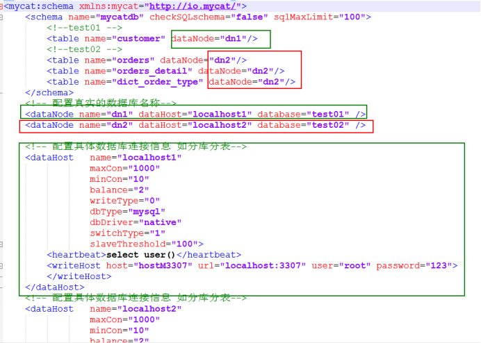

Mycat高级¶
第1章 认识Mycat¶
1.1 Mycat背景¶
Mycat的前身是阿里巴巴大名鼎鼎的Cobar，Cobar在开源了一段时间后，就没有再维护了，阿里巴巴放弃了该项目，再加上Cobar在使用过程中也发现存在一些问题。2013年国内一批开源软件爱好者对Cobar这个项目进行了改进，并命名为Mycat，这就是MyCat的诞生。MyCat是完全免费开源的，不属于任何商业公司。Mycat于2014年首次在上海的《中华架构师》大会上对外宣讲，随后越来越多的项目采用了Mycat。截至2015年11月，超过300个项目采用Mycat，涵盖银行、电信、电子商务、物流、移动应用、O2O的众多领域和公司。Mycat官网：http://www.mycat.io/
1.2 Mycat是什么¶
Mycat是一个开源数据库中间件，是一个实现了MySQL协议的的数据库中间件服务器，我们可以把它看作是一个数据库代理，用MySQL客户端工具和命令行访问Mycat，而Mycat再使用用MySQL原生（Native）协议与多个MySQL服务器通信，也可以用JDBC协议与大多数主流数据库服务器通信，包括SQLServer、Oracle、DB2、PostgreSQL等主流数据库，也支持MongoDB这种新型NoSQL方式的存储，未来还会支持更多类型的存储；一般地，Mycat主要用于代理MySQL数据库，虽然它也支持去访问其他类型的数据库；Mycat的默认端口是8066，一般地，我们可以使用常见的对象映射框架比如MyBatis操作Mycat。
1.3Mycat主要能做什么¶
1.3.1数据库的读写分离¶
通过Mycat可以自动实现写数据时操作主数据库，读数据时操作从数据库，这样能有效地减轻数据库压力，也能减轻IO压力。
实现读写分离，当主出现故障后，Mycat自动切换到另一个主上，进而提供高可用的数据库服务，当然我需要部署多主多从的模式
如果有了Mycat，客户端直接连接Mycat，可以实现读写分离，如果主出现问题，会自动切换到从服务器上
1.3.2数据分片¶
1.3.2.1水平切分(横向切分)¶
根据表中数据的逻辑关系，将同一个表中的数据按照某种条件拆分到多台数据库服务器上面，一张表里面的数据分散到多个表里面，按照年/月/日分表(分表)
1.3.2.2 垂直切分(纵向切分)
按照不同的表来切分到不同的数据库服务器之上
一个数据库里面的多个表分散到多个数据库里面(分库)
1.3.2.3结论¶
Ø 性能有瓶颈了，可以读写分离
Ø 数据库容量有瓶颈了，可以分库分表
1.3.3多数据源整合¶
能整合MySQL，Oracle，DB2, Redis等数据库
1.4 原理¶
Mycat的原理中最重要的一个动词是"拦截",它拦截了用户发送过来的SQL语句,首先对SQL语句做了一些特定的分析:如分片分析、路由分析、读写分离分析、缓存分析等，然后将此 SQL 发往后端的真实数据库，并将返回的结果做适当的处理，最终再返回给用户
1.5Mycat安装¶
上传到software目录下执行
yum install -y java-1.8.0-openjdk-devel.x86_64
tar –zxvf Mycat-server-1.6-RELEASE-20161028204710-linux.tar.gz
1.6Mycat日常管理¶
1.6.1Mycat启动¶
切换到mycat的bin路径下，执行
./mycat start
1.6.2Mycat关闭¶
切换到mycat的bin路径下，执行
./mycat stop
1.6.3Mycat命令行(先了解，后面会用到)¶
登录mycat命令行，使用mysql的命令行工具来操作的：
mysql -umycat -p -P8066 -h127.0.0.1
mycat默认数据访问端口是8066
1.7MyCat核心配置文件¶
1.7.1 server.xml¶
常用配置：
Ø 配置序列生成方式
Ø 配置mycat逻辑数据库，表 分片
Ø 配置mycat的访问账户和密码
1.7.2schema.xml¶
用于配置的逻辑数据库的映射、表、分片规则、数据结点及真实的数据库信息；
常用配置：
Ø 配置逻辑库映射
Ø 配置垂直切分的表
Ø 配置真实的数据库
Ø 配置读写结点
1.7.3 rule.xml¶
定义分片规则
1.8Mycat读写分离¶
1.8.1配置server.xml文件¶
1.8.2配置schema文件¶
1.8.3注意事项
需要修改server.xml和schema.xml配置文件的权限
chmod server.xml
1.8.4配置说明¶
只做读写分离，不做分库分表，Mycat只是帮我们转发一下请求，读转发到从库，写转发到主库，则schema标签里面不用配置table给schema标签加上属性dataNode，配置dataNode的名字(name)
1.8.4.1最终配置如下¶
<schema name="mycatdb" checkSQLschema="false" sqlMaxLimit="100" dataNode="dn1"/>
1.8.4.2配置dataNode¶
dataNode定义了Mycat中的数据节点，也就是我们通常说所的数据分片，一个dataNode标签就是一个独立的数据分片，通俗理解，一个分片就是一个物理数据库
Ø name
定义数据节点的名字，这个名字需要是唯一的，这个名字在schema里面会使用到；
Ø dataHost
用于定义该分片属于哪个数据库实例的,属性值是引用dataHost标签上定义的name属性
Ø database
用于对应真实的数据库名，必须是真实存在的；
最终配置如下
<dataNode name="dn1" dataHost="localhost1" database="test" />
1.8.4.3 配置dataHost¶
定义具体的数据库实例、读写分离配置和心跳语句；
配置说明
Ø balance属性
负载均衡类型，目前的取值有4种：
n balance="0", 不开启读写分离机制，所有读操作都发送到当前可用的writeHost上;
n balance="1"，全部的readHost与stand by writeHost参与select语句的负载均衡，简单的说，当双主双从模式(M1->S1，M2->S2，并且M1与 M2互为主备)，正常情况下，M2,S1,S2都参与select语句的负载均衡。
n balance="2"，所有读操作都随机的在writeHost、readhost上分发
n balance="3"，所有读请求随机的分发到wiriterHost对应的readhost执行，writerHost不负担读压力
Ø writeType
已过时，1.6版本就不用了
Ø switchType属性
用于指定主服务器发生故障后的切换类型
-1 表示不自动切换
1 默认值，自动切换（推荐）
2 基于MySQL主从同步的状态决定是否切换
3 基于MySQL galary cluster的切换机制（适合集群）（1.4.1）
通常情况下，我们MySQL采用双主双从的模式下，switchType为1即可。因为双主从模式下，主从同步关系很复杂，不能根据MySQL的状态来切换。只需要在一个主出问题后，切换到另外的主。
Ø heartbeat标签
用于和后端数据库进行心跳检查的语句，检测MySQL数据库是否正常运行
当switchType为1时，mysql心跳检查语句是select user()
当switchType为2时，mysql心跳检查语句是show slave status
当switchType为3时，mysql心跳检查语句是show status like 'wsrep%'
Ø writeHost与readHost标签
这两个标签都指定后端数据库的相关配置给mycat，用于实例化后端连接池。唯一不同的是，writeHost指定写实例、readHost指定读实例，组合这些读写实例来满足系统的要求。
在一个dataHost内可以定义多个writeHost和readHost。但是，如果writeHost指定的后端数据库宕机，那么这个writeHost绑定的所有readHost都将不可用。另一方面，由于这个writeHost宕机系统会自动的检测到，并切换到备用的writeHost上去。
1.8.5测试读写分离¶
1.确保已经打开2台mysql服务
并验证2台机器 主从复制已经起作用
2.启动Mycat
3.Navicat连接mycat
mycat默认数据访问端口是8066
4.创建dept表，插入数据，各个数据库都会存在 说明实现了主从复制
create table dept(
id int(10) primary key AUTO_INCREMENT,
name varchar(20)
);
insert into dept(id,name) values(1,"development");
说明写操作在3307上执行的 然后通过主从复制copy到3308
5.修改从库数据 添加3308数据信息
6.SQL语句验证
select * from dept
每执行一次 数据来自不同的数据库 说明实现负载均衡 请求转发
第2章 Mycat分库分表¶
2.1Mycat分库分表(垂直)¶
2.1.1分库原则¶
Join操作原则
多个数据库之间表join是不行的(跨库join行不同)
所以只要表之间有点关联就不能分到不同的库
分析
客户表 客户登录之后用户信息存放在session中,通过session我们可以获取到 customer_id 就可以单独分库
2.1.2创建数据库¶
#客户表 rows:20万
create table customer(
id int auto_increment,
name varchar(200),
primary key(id)
);
#订单表 rows:600万
create table orders(
id int auto_increment,
order_type int,
customer_id int,
amount decimal(10,2),
PRIMARY KEY(id)
);
#订单详情表 rows：600万
create table orders_detail(
id INT AUTO_INCREMENT,
detail varchar(2000),
order_id int,
PRIMARY KEY(id)
);
#订单状态字典表 rows：20
create table dict_order_type(
id INT AUTO_INCREMENT,
order_type varchar(200),
PRIMARY KEY(id)
);
2.1.3配置schema.xml¶

2.1.4查询测试¶
垂直拆分成功
2.1.5总结¶
垂直切分带来的价值：可以屏蔽掉多数据源的问题，只需要一个统一入口mycat就可以操作下面的多个数据库
一个数据库里面的多个表分散到多个数据库里面(分库)
2.2Mycat分库分表(水平)¶
2.2.1 前置条件¶
根据什么来进行分表，根据用户ID，一个人的数据信息放到一个数据库上去查压力不会太大, 3307和3308上面都得有orders表
所以在3307的test01上需要创建orders表
#订单表 rows:600万
create table orders(
id int auto_increment,
order_type int,
customer_id int,
amount decimal(10,2),
PRIMARY KEY(id)
);
2.2.2配置schema.xml¶
2.2.3配置rule.xml¶
2.2.4水平切分测试¶
insert into orders(id,order_type,customer_id,amount) values(1,101,100,100100);
INSERT INTO orders(id,order_type,customer_id,amount) VALUES(2,101,100,100300);
INSERT INTO orders(id,order_type,customer_id,amount) VALUES(3,101,101,120000);
INSERT INTO orders(id,order_type,customer_id,amount) VALUES(4,101,101,103000);
INSERT INTO orders(id,order_type,customer_id,amount) VALUES(5,102,101,100400);
INSERT INTO orders(id,order_type,customer_id,amount) VALUES(6,102,100,100020);
两个数据库分别有不同的数据插入 实现水平拆分
2.3Mycat分库分表(水平-ER表)¶
2.3.1前置条件¶
3307和3308上面都要有orders_detail详情表
2.3.2配置schema.xml¶
<childTable name="orders_detail" primaryKey="id" joinKey="order_id" parentKey="id" />
加上表
#订单详情表 rows：600万
create table orders_detail(
id INT AUTO_INCREMENT,
detail varchar(2000),
order_id int,
PRIMARY KEY(id)
);
2.3.3重启mycat¶
/bin/mycat restart
2.3.4水平切分测试¶
insert into orders_detail(id,detail,order_id) values(1,'detail1',1);
INSERT INTO orders_detail(id,detail,order_id) VALUES(2,'detail1',2);
INSERT INTO orders_detail(id,detail,order_id) VALUES(3,'detail1',3);
INSERT INTO orders_detail(id,detail,order_id) VALUES(4,'detail1',4);
INSERT INTO orders_detail(id,detail,order_id) VALUES(5,'detail1',5);
INSERT INTO orders_detail(id,detail,order_id) VALUES(6,'detail1',6);
两个数据库分别有不同的数据插入 实现水平拆分
SELECT * FROM orders o INNER JOIN orders_detail od ON od.order_id=o.id;
2.4Mycat分库分表(全局表)¶
设定为全局的表，会直接复制给每个数据库一份，所有写操作也会同步给多个库。所以全局表一般不能是大数据表或者更新频繁的表，一般是字典表或者系统表为宜。
2.4.1配置schema.xm¶
创建表
2.4.2添加数据测试¶
insert into dict_order_type(id,order_type) values(101,'type1');
INSERT INTO dict_order_type(id,order_type) VALUES(102,'type2');
会发现3307和3308上面都有数据存在
2.4.3 总结:面试¶
如果面试官问到你们如何设计你们电商数据库表的，其实就说我们今天这几张表结构 就可以了，把ER表，全局表，用户表这几个说清楚就可以了
第3章 Mycat全局序列号¶
3.1 本地文件方式¶
3.1.1 配置server.xml¶
修改sequnceHandlerType=0
指定使用Mycat全局序列的类型：
0为本地文件方式，1为数据库方式，2为时间戳序列方式
3.1.2 修改schema.xml文件¶
3.1.3 在mycat上添加表¶
create table dept(
id int(10) primary key AUTO_INCREMENT,
name varchar(50)
);
3.1.4 sequence_conf¶
这个主要是用来维护主键信息
如果想要每个表生成的主键连续，可以在sequence_conf.properties配置
当前表的生成值，一般将Global替换为自己对应的前缀即可（三个地方）。
3.1.5 测试(重启mycat)¶
insert into dept(id, name) values (next value for MYCATSEQ_GLOBAL,'zhangsan');
取值的时候通过next value for MYCATSEQ_XXXX获取
3.1.6 缺点¶
Mycat所在的机器要是挂了 获取全局ID这个功能都有问题了，
容易存在单点故障问题
3.2 时间戳方式¶
3.2.1 修改server.xml文件¶
3.2.2 修改表主键¶
这种方式，需要将主键设置为varchar类型，长度一般30
alter table dept modify column id varchar(30);
3.2.3 测试(重启mycat)¶
insert into dept(id, name) values (next value for MYCATSEQ_GLOBAL,'zhangsan');
3.2.4 缺点¶
Id值太长
3.3 数据库方式(推荐)¶
这里是数据库方式生成主键ID，不是采用数据库的主键自增，而是mycat利用mysql数据库生成一个主键
3.3.1 配置server.xml¶
修改sequnceHandlerType=1
3.3.2 在数据库中创建一张表，三个函数¶
比方说我们在3307的test01这个数据库上执行下面的sql语句
DROP TABLE IF EXISTS MYCAT_SEQUENCE;
CREATE TABLE MYCAT_SEQUENCE (name VARCHAR(50) NOT NULL,current_value INT NOT NULL,increment INT NOT NULL DEFAULT 1,
PRIMARY KEY(name)) ENGINE=InnoDB default charset=utf8;
INSERT INTO MYCAT_SEQUENCE(name,current_value,increment) VALUES ("GLOBAL", 0, 100);
DROP FUNCTION IF EXISTS mycat_seq_currval;
DELIMITER //
CREATE FUNCTION mycat_seq_currval(seq_name VARCHAR(50)) RETURNS varchar(64) CHARSET utf8
DETERMINISTIC
BEGIN
DECLARE retval VARCHAR(64);
SET retval="-999999999,null";
SELECT concat(CAST(current_value AS CHAR),",",CAST(increment AS CHAR)) INTO retval FROM MYCAT_SEQUENCE WHERE name = seq_name;
RETURN retval;
END //
DELIMITER ;
DROP FUNCTION IF EXISTS mycat_seq_setval;
DELIMITER //
CREATE FUNCTION mycat_seq_setval(seq_name VARCHAR(50),value INTEGER) RETURNS varchar(64) CHARSET utf8
DETERMINISTIC
BEGIN
UPDATE MYCAT_SEQUENCE
SET current_value = value
WHERE name = seq_name;
RETURN mycat_seq_currval(seq_name);
END //
DELIMITER ;
DROP FUNCTION IF EXISTS mycat_seq_nextval;
DELIMITER //
CREATE FUNCTION mycat_seq_nextval(seq_name VARCHAR(50)) RETURNS varchar(64) CHARSET utf8
DETERMINISTIC
BEGIN
UPDATE MYCAT_SEQUENCE
SET current_value = current_value + increment WHERE name = seq_name;
RETURN mycat_seq_currval(seq_name);
END //
DELIMITER ;
3.3.3 配置sequence_db_conf.properties¶
指定sequence相关配置在哪个节点上，例如我们在3307的test01上创建的生成主键的表，那么根据我们在schema.xml文件中的配置，对应的节点应该是dn1,

3.3.4 测试(重启mycat)¶
alter table dept modify column id int(11);
insert into dept(id, name) values (next value for MYCATSEQ_GLOBAL,'zhangsan');
select * from dept
插入之前current_value=0
插入之后current_value=100 每次递增是100 这样下次就是101
避免每次都从数据库进行计算 当获取了100次的时候current_value=200
3.3.5 优点¶
就算机器挂了，存在主从复制照样工作
本文总阅读量次